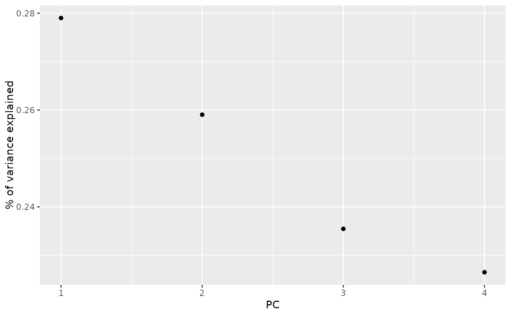

Broom tidies a number of lists that are effectively S3
objects without a class attribute. For example, stats::optim(),
svd() and akima::interp() produce consistent output, but
because they do not have a class attribute, they cannot be handled by S3
dispatch.
These functions look at the elements of a list and determine if there is
an appropriate tidying method to apply to the list. Those tidiers are
themselves are implemented as functions of the form tidy_<function>
or glance_<function> and are not exported (but they are documented!).
If no appropriate tidying method is found, throws an error.
tidy_svd(x, matrix = "u", ...)A list with components u, d, v returned by base::svd().
Character specifying which component of the PCA should be tidied.
"u", "samples", "scores", or "x": returns information about
the map from the original space into principle components space.
"v", "rotation", "loadings" or "variables": returns information
about the map from principle components space back into the original
space.
"d", "eigenvalues" or "pcs": returns information about the
eigenvalues.
Additional arguments. Not used. Needed to match generic
signature only. Cautionary note: Misspelled arguments will be
absorbed in ..., where they will be ignored. If the misspelled
argument has a default value, the default value will be used.
For example, if you pass conf.lvel = 0.9, all computation will
proceed using conf.level = 0.95. Additionally, if you pass
newdata = my_tibble to an augment() method that does not
accept a newdata argument, it will use the default value for
the data argument.
A tibble::tibble with columns depending on the component of
PCA being tidied.
If matrix is "u", "samples", "scores", or "x" each row in the
tidied output corresponds to the original data in PCA space. The columns
are:
rowID of the original observation (i.e. rowname from original data).
PCInteger indicating a principal component.
valueThe score of the observation for that particular principal component. That is, the location of the observation in PCA space.
If matrix is "v", "rotation", "loadings" or "variables", each
row in the tidied output corresponds to information about the principle
components in the original space. The columns are:
rowThe variable labels (colnames) of the data set on which PCA was performed
PCAn integer vector indicating the principal component
valueThe value of the eigenvector (axis score) on the indicated principal component
If matrix is "d", "eigenvalues" or "pcs", the columns are:
PCAn integer vector indicating the principal component
std.devStandard deviation explained by this PC
percentFraction of variation explained by this component (a numeric value between 0 and 1).
cumulativeCumulative fraction of variation explained by principle components up to this component (a numeric value between 0 and 1).
See https://stats.stackexchange.com/questions/134282/relationship-between-svd-and-pca-how-to-use-svd-to-perform-pca for information on how to interpret the various tidied matrices. Note that SVD is only equivalent to PCA on centered data.
Other svd tidiers:
augment.prcomp(),
tidy.prcomp(),
tidy_irlba()
Other list tidiers:
glance_optim(),
list_tidiers,
tidy_irlba(),
tidy_optim(),
tidy_xyz()
if (requireNamespace("modeldata", quietly = TRUE)) {
library(modeldata)
data(hpc_data)
mat <- scale(as.matrix(hpc_data[, 2:5]))
s <- svd(mat)
tidy_u <- tidy(s, matrix = "u")
tidy_u
tidy_d <- tidy(s, matrix = "d")
tidy_d
tidy_v <- tidy(s, matrix = "v")
tidy_v
library(ggplot2)
library(dplyr)
ggplot(tidy_d, aes(PC, percent)) +
geom_point() +
ylab("% of variance explained")
tidy_u %>%
mutate(class = hpc_data$class[row]) %>%
ggplot(aes(class, value)) +
geom_boxplot() +
facet_wrap(~PC, scale = "free_y")
}
#> New names:
#> * `` -> ...1
#> * `` -> ...2
#> * `` -> ...3
#> * `` -> ...4
#> New names:
#> * `` -> ...1
#> * `` -> ...2
#> * `` -> ...3
#> * `` -> ...4
